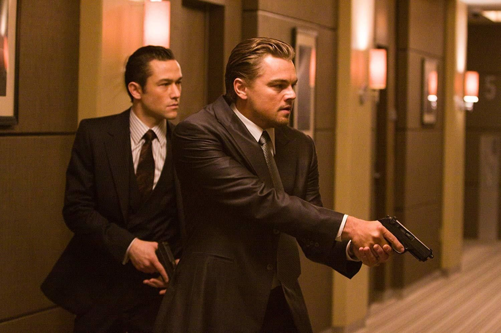
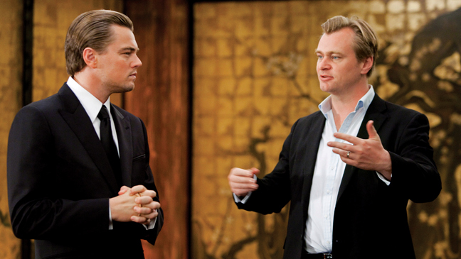

Inception จิตพิฆาตโลก
เนื้อเรื่อง
ภาพยนตร์เรื่องนี้เป็นภาพยนตร์เกี่ยวกับการใช้จิตวิทยาและการที่ควบคุมความคิดด้วยการใช้เครื่องมือเข้าไปสู่ฝันของผู้อื่น และยังสามารถบิดเบือนสถาปัตยกรรมภายในความฝันได้อีกด้วย ในความคิดส่วนตัว ผมคิดว่าบางส่วนของเรื่องนี้อาจจะเป็นไปได้จริงๆ อย่างเช่นการบิดเบือนสถานที่ต่างๆที่เกิดขึ้นในจิตใต้สำนึกของมนุษย์ขณะที่กำลังหลับ
ดอม คอบบ์ คือชายผู้ก่อตั้งทีมจารกรรมความคิด เขาและทีมงานจะเจาะเข้าไปในจิตใจของเป้าหมายผ่านทางการแชร์ความฝัน เพื่อดึงเอาข้อมูลลับที่เป้าหมายเก็บงำไว้ในจิตใต้สำนึกออกมาตามคำสั่งของผู้ว่าจ้าง ซึ่งโดยส่วนมากแล้วจะเป็นการล้วงความลับทางธุรกิจ เป้าหมายรายล่าสุดของคอบบ์และทีมงานคือ ไซโตะ นักธุรกิจชาวญี่ปุ่น คอบบ์ทำการล้วงข้อมูลของไซโตะผ่านทางความฝันซ้อนฝัน ซึ่งจบลงด้วยความล้มเหลว แต่ไซโตะกลับยื่นข้อเสนอว่าจ้างทีมของคอบบ์ให้ทำการ "อินเซพชั่น" ข้อมูลลงในจิตของผู้สืบทอดบริษัทคู่แข่งแทน โดยที่ไซโตะยื่นข้อเสนอกับคอบบ์ว่า ถ้าทำสำเร็จจะพาเขากลับบ้านไปหาลูกๆของเขาได้
การผลิตและกำกับ
ในการถ่ายทำฉากความฝันในภาพยนตร์เรื่องนี้ โนแลนใช้การสร้างภาพด้วยคอมพิวเตอร์กราฟิกน้อยมาก โดยเขาเลือกที่จะใช้เทคนิกพิเศษที่เป็นของจริงให้มากที่สุดเท่าที่จะเป็นไปได้ เขากล่าวว่า "สำหรับผมแล้วมันสำคัญมากที่จะพยายามทำทุกอย่างให้ปรากฏขึ้นจริงๆ ต่อหน้ากล้องถ่ายภาพยนตร์ หลังจากนั้นหากมีความจำเป็นจริงๆ ก็จะใช้คอมพิวเตอร์กราฟิกเข้าช่วย ซึ่งจะมีประโยชน์มากในการสร้างหรือเสริมสิ่งที่ถ่ายทำได้ให้ดียิ่งขึ้นไปอีก" ซึ่งสุดท้ายแล้ว หัวหน้างานสร้างฝ่ายเทคนิกภาพพิเศษ Paul Franklin ได้สร้างฉากจำลองขนาดเล็กของฉากป้อมปราการบนภูเขาขึ้น และระเบิดมันทิ้งเพื่อเป็นส่วนหนึ่งของการถ่ายทำ ฉากการต่อสู้ในสภาวะไร้น้ำหนักมีการใช้เทคนิกพิเศษทางคอมพิวเตอร์กราฟิกเพื่อช่วย "ดัดแปลงองค์ประกอบทางฟิสิกส์ พื้นที่ และเวลา เพียงเล็กน้อย"